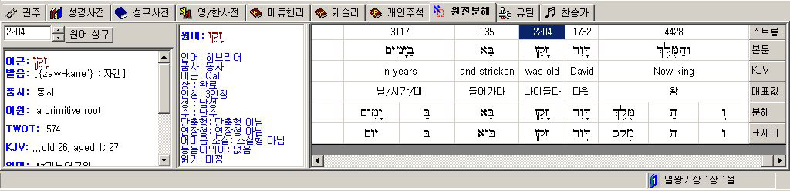

|
|
신구약
히브리어/헬라어
인라인(in-line) 원전분해 및 스트롱 사전 (프로페셔널 이상)
-
단순하고
친숙한 형태로, 누구나 쉽게 사용할 수 있는 원전 분해 연구 기능을 제공합니다.
-
다양한 성서 번역본과 원전 분해,
영한대역 스트롱 사전, 파싱(스칼라 에디션), 원어 성구 사전 등이 하나의 문서창에서 쉽고 편리하게 통합
연동하는 독창적인 인터페이스입니다.
-
각종 원어 연구 데이터베이스를 수초 내에 동시 검색할
수 있습니다.
-
원어와 어순과 문법이 다른 한글 성서를 무리하게 분해, 대응시킨 기존 한글판 분해 성서의 오류를 극복하고,
대표의미를 수록, 보다 정확한 의미의 전달을
기하고 있습니다.
-
각
단어를 클릭할 때마다 해당 단어에 대한 영한대역
스트롱 사전이 자동 업데이트됩니다.
-
영한대역
스트롱 사전은 어근, 발음, 품사, 어원, TWOT 번호,
KJV에서의 영어 단어별 사용 내역, 의미 등이
깨끗이 정리되어 보기 편한 인터페이스로
제공됩니다.

* 단, 위 그림에서 [분해], [표제어] 및 파싱
정보는 스칼라 에디션에서만 제공됩니다.
이전 화면
|
Copyright (c) 1998-2008 TOBEST All rights reserved.
Email: webmaster@visualbible.co.kr